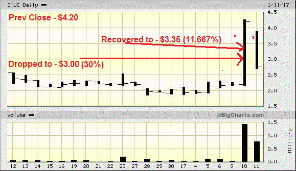
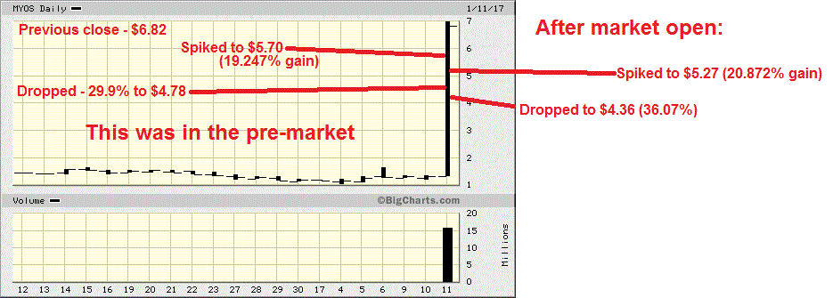
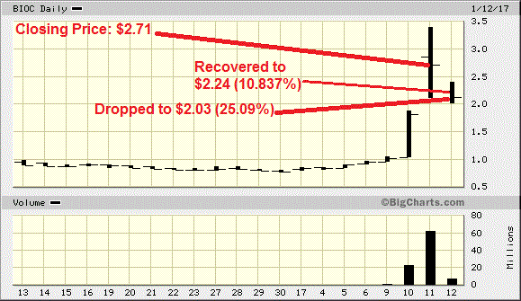
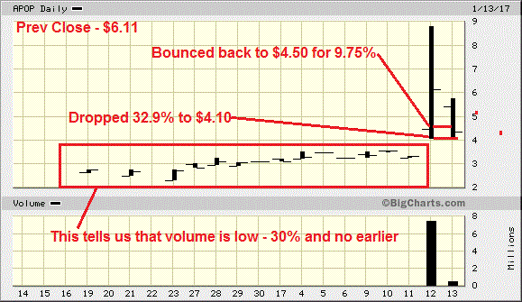

Pink Sheets
- News - 90% early, 95% later on in the day
- If the bigcharts chart is blank and the stock is above $1.00, then 50% is not enough, make it 55%.
- PREVIOUS DAY SPIKE UP
- 60%
- Restructuring support agreement - 82%
OTCBB
Nasdaq/NYSE/AMEX
- PHARMACEUTICALS
- Phase I failures - 45-50%
- Phase II failures - 58-60%
- Phase III failures - 81-85% - DO NOT jump in earlier than 83% - If previous close was high (i.e. $38.00/share) then 85% for sure.
- If a pharmaceutical's news comes out late afternoon (say 2:30), then 40% the next day
- Rejection letter for application - 70%
- Under investigation by Nasdaq request over the DMC appointed in connection with a phase III - 40%
- CHAPTER 11
- Chapter 11 for a company's subsidiary - 40% for the company
- CHAPTER 7 - 85%
- LAYOFFS
- If company is laying off 75% of workforce, then 70% or more
- If company is laying off 50% of workforce, then 65-70%
- If company is laying off 30% of workforce, then 52-55%
- If company is laying off 9% of workforce, then 35-40%
- VIX
- If the vix is 15%, then enter at 15%
- ETF/ETN
- 20% pre-market (until 9:15am or so)
- 20-23% from 9:15am until 9:45am
- 23-25% from 9:45am until 10:45am
- 25-30% from 10:45am until noon
- 30-35% until 1:15pm, thenk back off
- ichart.finance.yahoo.com/table.csv?s=BHAC
- Anytime a company spends money to acquire another company or assets - 20-25%
- REVERSE SPLIT
- Day of announcement - 35%
- Day that the split takes place - 20-25% - Later on in day (i.e. leaving for work) - 35%
- Day that split takes place + news (i.e. bad Seeking Alpha article) = 38-40% right off the bat
- "Approaching" reverse stock split - 19%
- DELISTING
- Day of delisting notice - 35-40%
- Voluntarily delist - 75%
- If the company is moving to the OTC the next day - 70%
- Voluntarily delisting the next week - 55%
- Company slashes future guidance - 40%
- Downgrade with no other news to go along with the downgrade - 20-23%
- Pharmaceutical withdrawal of submission - 55%
- Company loses lawsuit and is forced to pay 70 million+ - 60-65% early
- A company that was going to be acquired by another company - the acquiring company drops the ball and reverses it's decision - 45%
- DO NOT chase earnings losses earlier than 65% - at any time of the day.
- OFFERINGS
- If the offering price is HIGHER THAN yesterday's close, start at 35% and keep checking back for a new offering.
- If it closed at a price of $1.22 and the offering price is $1.22 and it says something like "subject to a floor of $0.35, then 50%.
- PREVIOUS DAY SPIKE UP
- 20% or more in premarket
- 23-25% at the opening bell
- 30% by 10:00am
- 35% or more as we approach 11:00am
- Previous spike + downgrade - 35-40% right off the bat
Miscellaneous Nasdaq/NYSE/AMEX Notes
- As covered a few times in last week's recaps, normally when we see a stock drop on a late-stage drug news report, the
security can drop 85% or more and can see an initial price recovery of 35-40% (on average).
- "Voluntarily Deregister as a Reporting Company with the SEC" - "Reporting Company" simply means a company that is listed on an exchange
- Asset sales + reduction in workforce - 80%
- Company signs non-binding letter of intent to sell its US operations to Gain Capital (GCAP) - 52%
- Amendment to a merger - 22%
- Failed merger - 40-45%
- Dividend cuts - 35%
- Enter into stock purchase agreement with another company + acquisition of more assets - 35%
- Notice of effectiveness related to an addended form S-1 - 40% until you see the S-1 form.
Previous Day High Closing
- Previous close $4.20

- Previous close $6.82

- Previous close $2.71

- Previous close $6.11
